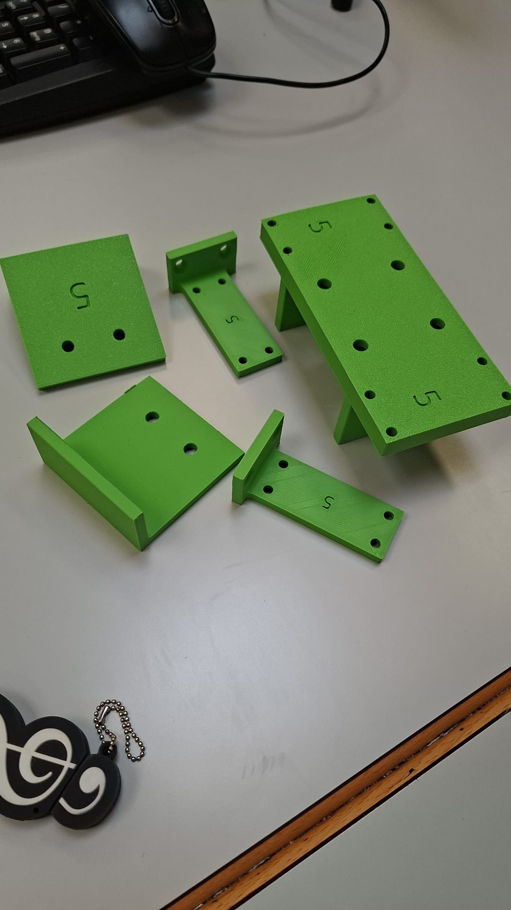
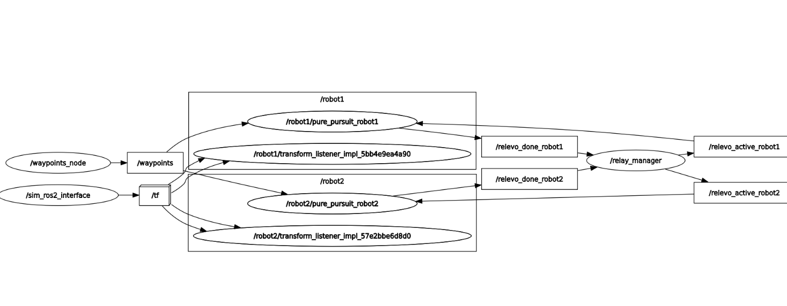

🦾 Key Projects
1. Industrial Pick & Place Automation with Custom 3D-Printed Tooling
Project Overview
Designed and programmed an industrial robotic manipulation cell using the Universal Robots UR10e platform. The project focused on automated pick & place and assembly operations using custom-designed robotic grippers and 3D-printed tooling components.
The engineering challenge consisted of creating optimized robotic fingers and support structures capable of manipulating different industrial objects such as spoons and packaging elements while maintaining precision, repeatability, and grasp stability.
Key Technical Contributions
-
Custom CAD Design:
Designed modular robotic gripper fingers and support fixtures
in
Onshapefor theSMC MHC2-16Dpneumatic gripper system. - 3D Manufacturing Workflow: Fabricated and validated custom-designed parts using additive manufacturing techniques, including tolerance validation, mechanical fitting, and modular assembly integration.
- Robot Programming: Programmed industrial manipulation routines for pick & place, multi-pick, and assembly tasks using Universal Robots software environments.
- Assembly Automation: Developed automated spoon insertion and positioning routines where the robot aligned and inserted components into different target locations with varying difficulty levels.
- Process Optimization: Optimized robot trajectories and execution timing to maximize the number of successful manipulation cycles during constrained operation windows.
Engineering Workflow
The project combined robotic manipulation, custom mechanical design, industrial automation, and additive manufacturing workflows. All components were designed in CAD, fabricated through 3D printing, assembled mechanically, and validated on industrial robotic platforms.
Mechanical Design & Prototyping
Designed and fabricated custom robotic fixtures, gripper adapters, and manipulation supports using additive manufacturing techniques. The components were optimized for fast prototyping, modular assembly, and compatibility with industrial robotic tooling.

2. Multi-Robot Relay Race Simulation (ROS2 & CoppeliaSim)
Project Overview
Developed and simulated a cooperative relay race between two autonomous mobile robots using the Turtlebot3 model. The system implements a coordination architecture where one robot finishes a trajectory and triggers the second robot to continue autonomously.
Key Technical Contributions
-
Path Tracking Control:
Implemented Pure Pursuit trajectory control using
cmd_velandodom. -
Multi-Robot Architecture:
Designed isolated ROS2 namespaces
(
/robot1and/robot2) to avoid topic collisions. -
Coordination Logic:
Integrated a custom
relay_managernode for synchronization between robots. - Waypoint System: Created a dynamic waypoint publisher using YAML configurations.
System Architecture Graph
The graph below shows the ROS2 nodes, topics, remappings, and communication pipeline used for multi-robot synchronization.


3. Through The Door | Cross-Platform AR Assistive Technology
Project Overview
Through The Door is a cross-platform mobile application designed to empower individuals with reduced mobility, specifically wheelchair users, by providing real-time accessibility telemetry of urban and university infrastructures.
Developed during the Social Impact Apps studio at the Amsterdam University of Applied Sciences (HvA), the application addresses the lack of reliable architectural accessibility information by combining Augmented Reality, Geospatial Mapping, and Reactive Cloud Services.
Users can measure physical spaces such as doors and narrow passages directly through their smartphones and visualize accessibility reports on a live interactive map.
Architecture & Technical Stack
-
Frontend:
Cross-platform mobile development using
FlutterandDart. -
Architecture:
Implemented following
Clean ArchitectureandSOLIDprinciples with clear separation between Data, Domain, and Presentation layers. -
State Management:
Reactive UI handling using
BloC / Cubit. -
Augmented Reality:
Spatial measurement system developed with
ar_flutter_plugin_2for horizontal and vertical plane detection. -
Geospatial Infrastructure:
Interactive mapping powered by
flutter_mapandOpenStreetMap. -
Backend:
Real-time cloud synchronization using
Cloud Firestore,Firebase Authentication, and local persistence withSharedPreferences. -
Dependency Injection:
Modular decoupling through the
GetItservice locator pattern.
Key Technical Contributions
- AR Spatial Telemetry: Developed the augmented reality measurement engine capable of detecting planes and computing real-world distances using 3D vector mathematics.
- Accessibility Validation Logic: Implemented a dynamic validation pipeline comparing measured door widths against user wheelchair configurations to classify spaces as accessible or non-accessible in real time.
- Live GPS & Map Synchronization: Engineered asynchronous geolocation pipelines connected to real-time Firestore streams for dynamic map marker updates.
- Interactive Geospatial UI: Designed contextual map overlays and modal bottom sheets displaying telemetry metadata and accessibility measurements.
-
Automated Testing & Reliability:
Developed widget tests and hardware virtualization mocks
using
mocktailandMethodChannelsimulation to validate GPS and device-dependent workflows.
Social Impact & Engineering Goals
The application was designed to reduce uncertainty and mobility barriers for wheelchair users by delivering precise and verifiable accessibility measurements before physically reaching a location.
The project combined software engineering, geospatial systems, augmented reality, mobile UX design, and accessibility-centered development into a production-oriented architecture.

4. Interactive 3D Graphics Simulation & Computer Vision Environment
Project Overview
Developed an entirely custom, real-time interactive 3D simulation platform built using Visual Studio, designed to manage compound object scenes, vehicle mechanics, and context-dependent rendering environments. The engine architecture features dynamic ocean and garden environments, asset population routines, and interactive sub-systems.
Key Technical Contributions
- Multi-Vehicle Control Engine: Integrated switchable user-controlled kinematics supporting full free-roam navigation for distinct vehicles (car and motorcycle configurations), each with specialized properties.
- Solidary Lighting Pipelines: Engineered responsive spotlight behaviors dynamically re-orienting and locking projection matrices matching live camera angle sweeps to mimic headlights.
- Dynamic Environmental FX: Developed status toggles parsing localized real-time shaders for atmospheric rendering, including dynamic fog densities, wireframe debug styling, and day-night light shifting.
- Real-time Physics & Interactive Sub-systems: Implemented discrete bounding-box spatial collision pipelines handling randomly generated procedural hazards. Created an in-simulation overlay tracking velocity scaling, a score-tracking currency system, and real-time element ignition/extinguishment routines via user pointer triggers.